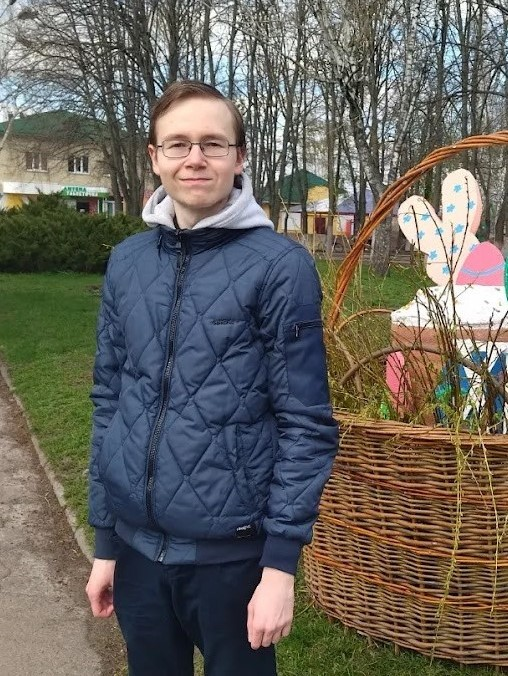
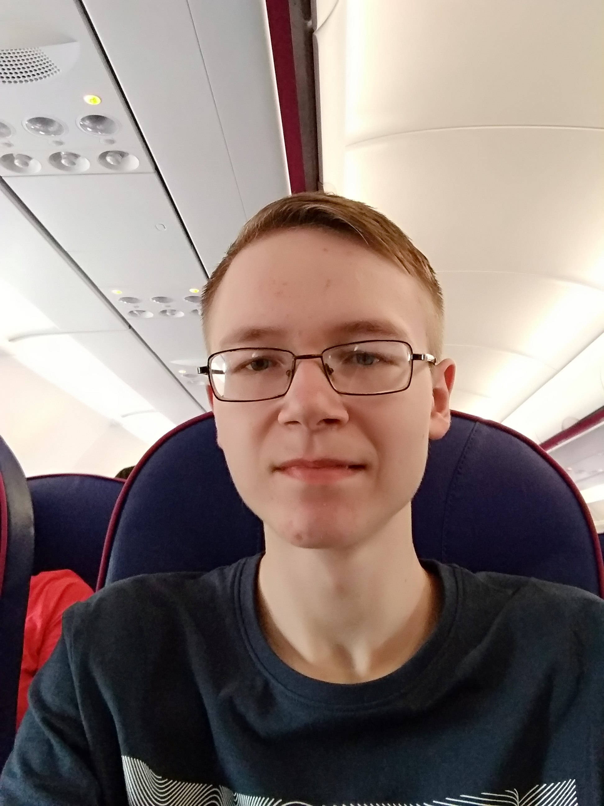
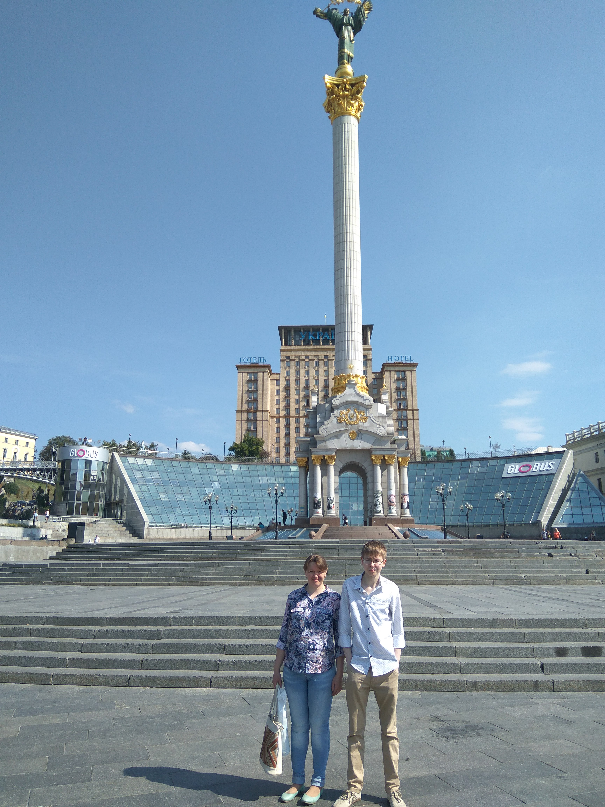
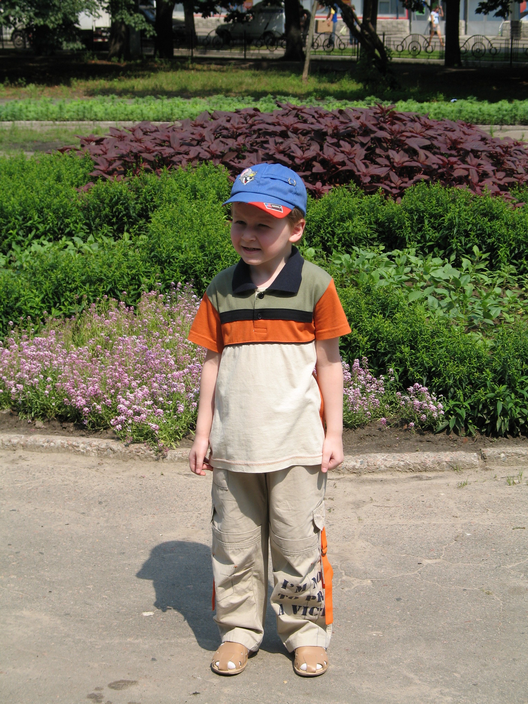

Про себе
Я, Велігорський Богдан Олександрович, народився 8 червня 2001 року в прекрасному та затишному місті Чернігові, яке розташовується в Україні. Рідних братів чи сестер не маю. Але є двоюрідний брат, якому цогоріч виповнилося 3 роки, а також троюрідний, якому на даний момент 7 років.
Перші 2 роки мого життя мене виховували люблячі батьки, а от десь в 2004 я пішов у свій перший дитячий садок - №36. Проте, у зв'язку з переїздом, мені довелося змінити дитячий садок на ДНЗ №32. Згодом і його довелося змінити. Останнім садочком, який я відвідував, був ДНЗ №35.
У 2008 році вступив до першого класу Ченігівського ліцею №32. У шкільні роки брав участь в учнівських олімпіадах з географії, навіть тричі займав призові місця (ІІІ, ІІІ та ІІ відповідно). Перші 9 років навчався у "А" класі, а останні 2 - у "Б". Що цікаво, в останні 3 роки клас мій був англійсько-історичного профілю. Тому, можу сказати, що за повною загальною середньою освітою я гуманітарій. Але незважаючи на це, я цікавився фізикою та електронікою. Тому далі я хотів навчатися саме по цим напрямкам. Оскільки я вже мав зацікавленість у світі інформаційних технологій (ІТ) та певне розуміння того, що там відбувається, то прагнув вступити на спеціальність, пов'язану з ним. Успішно склавши Зовнішнє незалежне оцінювання, я став студентом Чернігівського національного технологічного університету (це застаріла назва, яка була змінена на нову в грудні 2019 року). Як і хотів, потрапив на спеціальність під номером 123 "Комп'ютерна інженерія". Оскільки вступив я у 2019 році, то і номер групи моєї відповідний - КІ-191.
Зараз я студент 3-го курсу цієї ж спеціальності. Навчаюся добре. Одного разу вирішив взяти участь у студентській олімпіаді з програмування від Chernihiv.It. Зі своїм одногрупником навіть вдалося вибороти ІІІ місце.
Ось такий опис "про себе". Звісно, ІТ не єдине, що мене цікавить. Про інші мої інтереси написано в наступному пункті - "Мої захоплення", а також на відповідній сторінці.
Я, Велігорський Богдан Олександрович, народився 8 червня 2001 року в прекрасному та затишному місті Чернігові, яке розташовується в Україні. Рідних братів чи сестер не маю. Але є двоюрідний брат, якому цогоріч виповнилося 3 роки, а також троюрідний, якому на даний момент 7 років.
Перші 2 роки мого життя мене виховували люблячі батьки, а от десь в 2004 я пішов у свій перший дитячий садок - №36. Проте, у зв'язку з переїздом, мені довелося змінити дитячий садок на ДНЗ №32. Згодом і його довелося змінити. Останнім садочком, який я відвідував, був ДНЗ №35.
У 2008 році вступив до першого класу Ченігівського ліцею №32. У шкільні роки брав участь в учнівських олімпіадах з географії, навіть тричі займав призові місця (ІІІ, ІІІ та ІІ відповідно). Перші 9 років навчався у "А" класі, а останні 2 - у "Б". Що цікаво, в останні 3 роки клас мій був англійсько-історичного профілю. Тому, можу сказати, що за повною загальною середньою освітою я гуманітарій. Але незважаючи на це, я цікавився фізикою та електронікою. Тому далі я хотів навчатися саме по цим напрямкам. Оскільки я вже мав зацікавленість у світі інформаційних технологій (ІТ) та певне розуміння того, що там відбувається, то прагнув вступити на спеціальність, пов'язану з ним. Успішно склавши Зовнішнє незалежне оцінювання, я став студентом Чернігівського національного технологічного університету (це застаріла назва, яка була змінена на нову в грудні 2019 року). Як і хотів, потрапив на спеціальність під номером 123 "Комп'ютерна інженерія". Оскільки вступив я у 2019 році, то і номер групи моєї відповідний - КІ-191.
Зараз я студент 3-го курсу цієї ж спеціальності. Навчаюся добре. Одного разу вирішив взяти участь у студентській олімпіаді з програмування від Chernihiv.It. Зі своїм одногрупником навіть вдалося вибороти ІІІ місце.
Ось такий опис "про себе". Звісно, ІТ не єдине, що мене цікавить. Про інші мої інтереси написано в наступному пункті - "Мої захоплення", а також на відповідній сторінці.
Мої захоплення
Перелік сфер діяльності та інтересів, якими я цікавлюсь, наступний:
Перелік сфер діяльності та інтересів, якими я цікавлюсь, наступний:
- ІТ
- Футбол
- Прослуховування музики
- Відеоігри
- Фотографія
Фотографії
Декілька фотографій з мого життя:
 На Великдень (2012)
На Великдень (2012)
Декілька фотографій з мого життя:

Десь в Україні (2022)
Мені 20 (2021)

Повертаюся додому (2019)

У Києві (2017)
На Великдень (2012)

У парку Чернігова (2006)